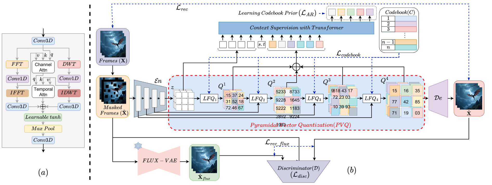
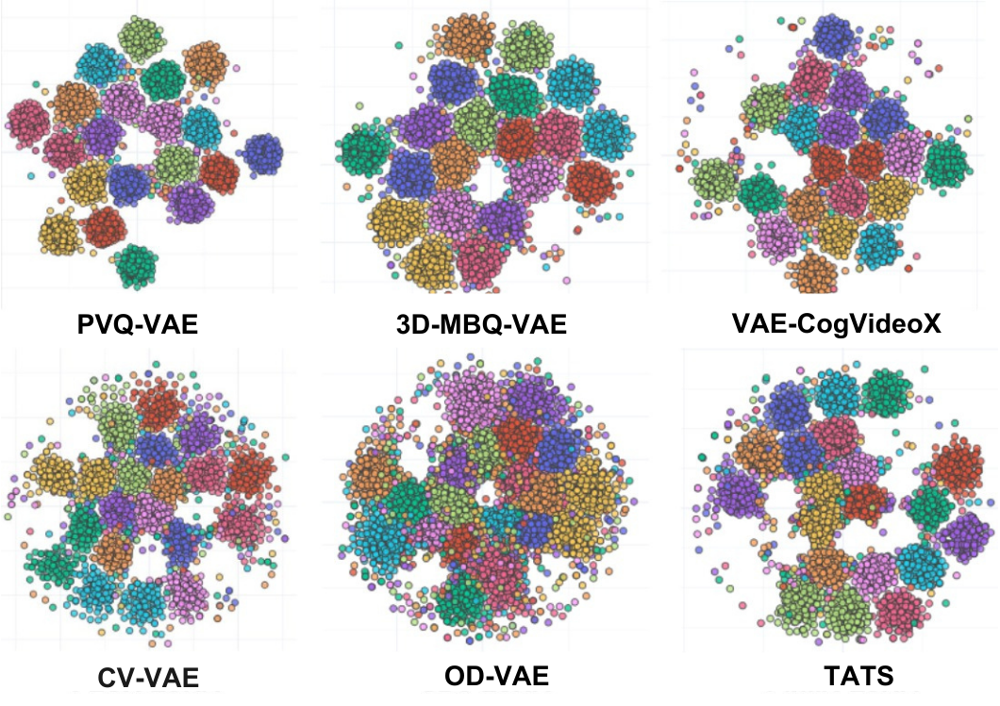
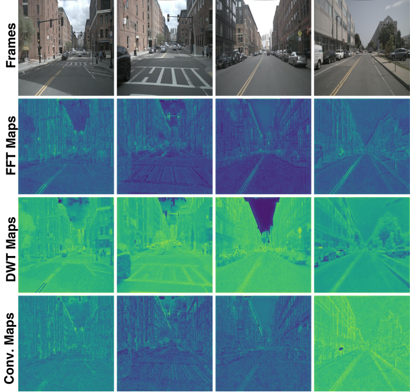

Pyramidal Spectrum: Frequency-based Hierarchically Vector Quantized VAE for Videos (PVQ-VAE)
A frequency-aware, pyramidal vector-quantized VAE that combines FFT + DWT, lookup-free quantization,
and a coarse-to-fine latent hierarchy to produce high-fidelity video reconstructions under strong compression.
Tushar Prakash1†,
Onkar Susladkar2†,
Inderjit S. Dhillon3,
Sparsh Mittal4
1Independent Researcher, India
2UIUC
3UT Austin and Google Research, USA
4IIT Roorkee, India
(tushar121prakash, onkarsus13)@gmail.com,
inderjit@utexas.edu,
sparsh.mittal@mfs.iitr.ac.in
Video VAEs compress high-dimensional spatiotemporal signals into latent spaces used by generative models and codecs.
However, standard convolutional VAEs and vector-quantized models struggle to capture both global structure and high-frequency
details under strong compression, and typically quantize at a single resolution.
PVQ-VAE introduces a frequency-aware encoder–decoder coupled with
Pyramidal Vector Quantization (PVQ), a hierarchical multi-resolution quantization scheme.
The encoder integrates 2D FFT and 2D DWT branches to model global semantics and multi-scale local details,
while lookup-free binary quantization at each level produces discrete video tokens suitable for autoregressive priors.
A coarse-to-fine decoder progressively refines reconstructions from global layout to high-frequency textures.
On WebVid-val, COCO-val, and MCL-JCV, PVQ-VAE achieves state-of-the-art PSNR/SSIM/LPIPS at up to
32× spatial and 16× temporal compression, and improves text-to-video quality
when used as a drop-in tokenizer in existing pipelines.
PVQ-VAE Architecture
Frequency-aware encoder with FFT and DWT branches, pyramidal vector quantization with lookup-free binary codes,
and a coarse-to-fine decoder.

Overview of PVQ-VAE. The encoder augments 3D convolutions with FFT and DWT branches to jointly capture global
and local frequency information. Features are progressively downsampled and quantized at multiple scales using
lookup-free binary vector quantization. The fused pyramid of discrete latents is decoded back to the video space.
An autoregressive transformer prior models dependencies among latent tokens for compression and generation.
Representation Analysis
PVQ-VAE learns structured latent spaces and frequency-aware features.
Below we show t-SNE plots of discrete tokens and corresponding FFT/DWT/Conv feature maps.

t-SNE plot of PVQ-VAE discrete latents compared to competing VAEs.
PVQ-VAE forms tighter, semantically meaningful clusters, showing stronger latent organization.

Comparison of FFT, DWT, and Convolution feature maps.
FFT captures global frequency structure, DWT captures multi-scale details,
while convolution focuses on local spatial patterns.
+2.12
PSNR (COCO-Val)
+3.90
PSNR (WebVid-Val)
23.7%
Faster Inference
−23%
Decoder Params
Qualitative Comparisons with Prior Video VAEs
Each video shows a 2×2 grid similar to the examples you provided, comparing
CogVideoX-VAE, CV-VAE, 3D-MBQ-VAE, and PVQ-VAE under the same compression setting.
High-speed motorcycle sequence. PVQ-VAE preserves sharp motion boundaries, road textures, and distant structures,
while competing VAEs exhibit noticeable blur and loss of fine details under identical compression.
Fast sci-fi aerial flying scene with rich textures and rapid motion. PVQ-VAE retains clear edges, background fidelity,
and object contours where baseline VAEs produce significant motion blur and smoothing artifacts.
Urban traffic sequence with complex camera motion and heavy occlusion. PVQ-VAE reconstructs building facades,
lane markings, and vehicle boundaries more crisply compared to baseline VAEs operating at the same bitrate.
Dynamic sci-fi helicopter flying scene containing fine structural detail and non-rigid motion. PVQ-VAE preserves texture richness
and structural sharpness, outperforming baseline VAEs that blur small objects and high-frequency components.
Ablation: Effect of FFT and DWT Branches
2×2 videos showing w/o FFT & w/o DWT, w/o FFT, w/o DWT, and full PVQ-VAE,
matching the style of your second screenshot.
Ablation on an aircraft takeoff sequence. Removing FFT or DWT results in smeared runway textures and reduced
high-frequency detail, whereas full PVQ-VAE reconstructs crisp edges and stable global structure.
Sunset cityscape with complex gradients and repetitive patterns. FFT and DWT branches are crucial for recovering
fine textures and spatial-frequency cues; the full PVQ-VAE yields sharper buildings and smoother color transitions.
Coastal aerial sequence illustrating multi-scale texture reconstruction. Removing frequency branches leads to washed-out
cliffs and ocean textures, while full PVQ-VAE captures both global shapes and localized details.
Moving-vehicle scene with high-motion background. The absence of FFT/DWT branches introduces motion blur and loss
of scene geometry; PVQ-VAE retains sharp contours and consistent temporal structure.
Citation
If you find PVQ-VAE useful, please cite:
@inproceedings{prakash2026pvqvae,
title = {Pyramidal Spectrum: Frequency-based Hierarchically Vector
Quantized VAE for Videos},
author = {Prakash, Tushar and Susladkar, Onkar and
Dhillon, Inderjit S. and Mittal, Sparsh},
booktitle = {Proceedings of the IEEE/CVF Winter Conference on Applications
of Computer Vision (WACV)},
year = {2026}
}